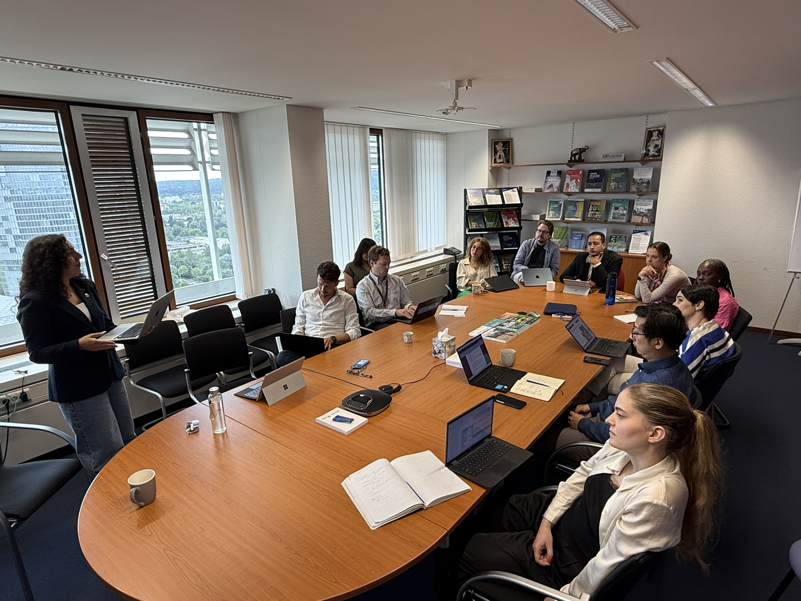
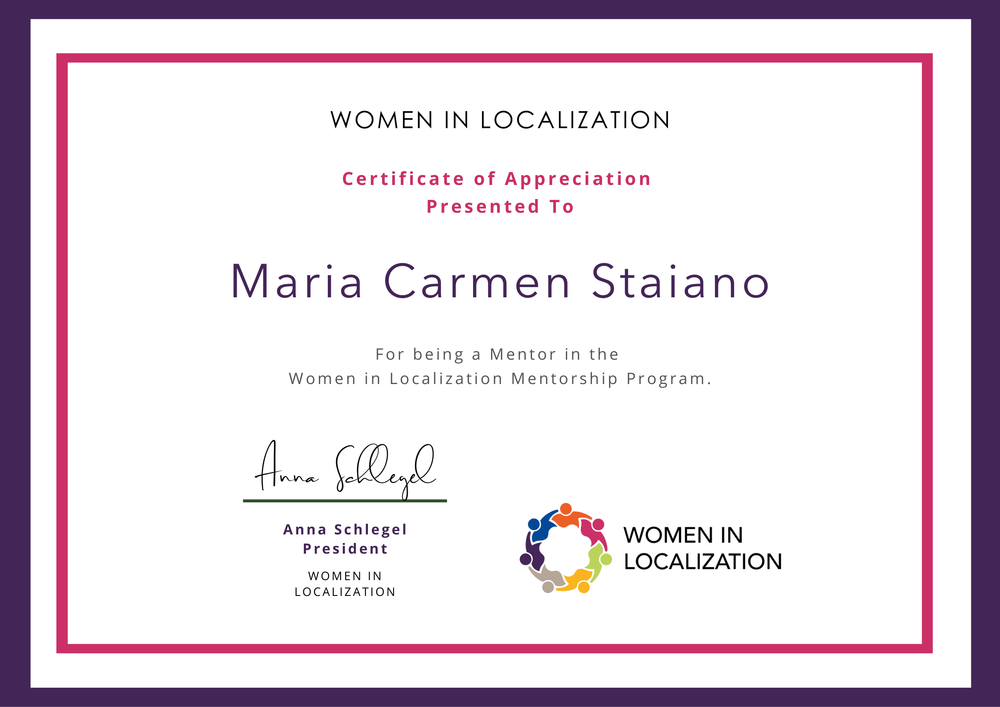
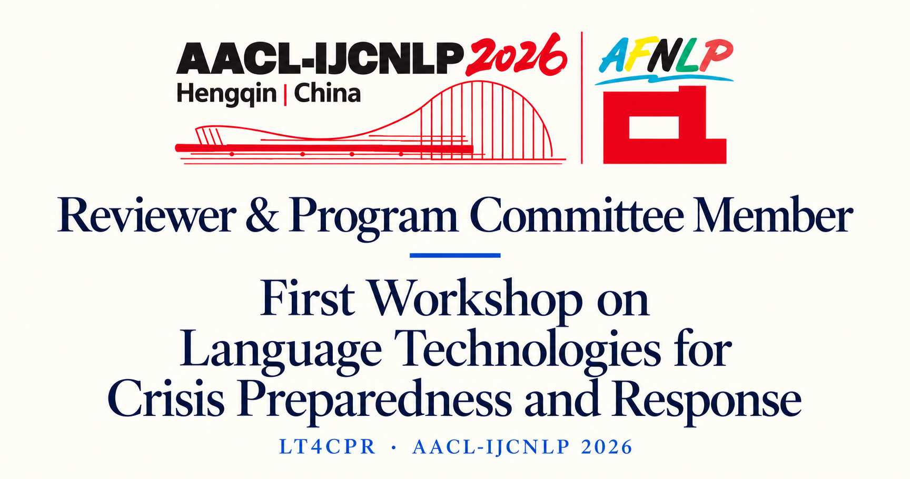

About
Maria Carmen Staiano
/maˈri.a ˈkar.men staˈja.no/

Previously at Apple AIML · European Parliament · UNDRR
Hi, I'm Maria Carmen, originally from Naples in Southern Italy. Over the course of my academic and professional journey, I have studied and worked in several countries, including Switzerland, Germany, Spain, and Ireland. I am passionate about foreign languages and artificial intelligence, particularly its impact on society.
I am a PhD researcher in Humanities and Technologies at the University of Macerata, supervised by Francesca Chiusaroli and Johanna Monti. My research explores Machine Translation and Large Language Models for crisis communication, with a focus on translation quality, actionability and multilingual terminology.
Crisis CommunicationMachine TranslationLLM EvaluationMultilingual Terminology
- ResearchMT Evaluation and Language Technologies for emergency communication.
- UNDRRPublic Information Internship in Bonn, with research on multilingual Hazard Information Profiles (HIPs).
- TeachingComputational Linguistics Teaching Assistant at the University of Naples L’Orientale.
- CommunityMentoring, outreach and volunteer translation.
I hold a BA in Linguistic and Cultural Mediation and an MA in Specialised Translation (English, French, German) from the University of Naples L’Orientale.
Request my academic CV →research
Research & publications
Benchmarking Multilingual Terminology Translation for UNDRR-ISC Hazard Information Profiles
Translating Under Pressure: Domain-Aware LLMs for Crisis Communication
ITALERT: Assessing the Quality of LLMs and NMT in Translating Italian Emergency Response Text
Full profile on Google Scholar ->
Teaching & training
University teaching, professional training and career guidance.
Teaching assistant
Computational Linguistics
University of Naples L’Orientale
Practical labs and written and oral examinations. 36 teaching hours per semester.
Professional training
Machine Translation Literacy & Prompt Engineering
United Nations Office for Disaster Risk Reduction (UNDRR)
Internal training on machine translation and LLMs for risk communication, delivered to teams in Bonn, Geneva and Bangkok.
Career guidance
Bridging the gap: linguists and the job market
University of Naples L’Orientale
Career guidance seminars for Master’s students in Specialised Translation.
Guest lecture
Language in Society Colloquium
European University Viadrina, Germany
Guest lecture within the colloquium led by Britta Schneider.
Community
Community
Public Engagement
Sharing knowledge. Connecting communities.
I am committed to outreach and collaborative initiatives that bridge research, practice and society. Through teaching, mentoring and public engagement, I aim to contribute to more inclusive and informed conversations about language and technology.
Talks & Workshops
I share my research through talks and interviews on translation, language technologies and crisis communication.

Talks and Workshops
Mentoring
As a mentor in the Women in Localization Mentoring Program, I support junior linguists and translators in their career development.

Women in Localization Mentoring Program
Academic service
I contribute to the academic community through peer-review and programme committees, supporting collaborative research and the exchange of knowledge.

Academic service